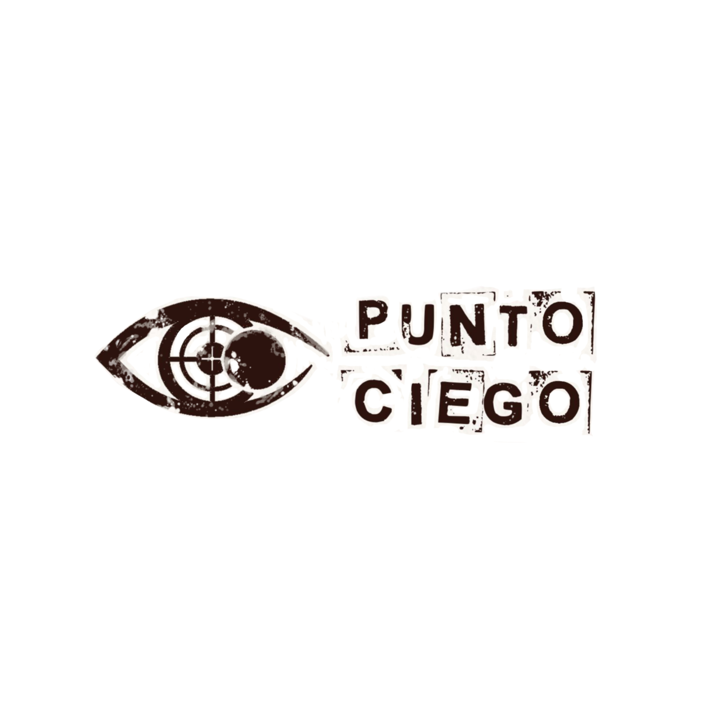

Educación
Centros juveniles, escuelas, talleres y cooperativas.

Todos los sueños están unidos por un hilo de oro, que abre cada puerta en la que cuatro palabras serán poco para un proyecto, pero suficientes para realizar un sueño:
Es un movimiento que educa a los jóvenes a través del trabajo voluntario en favor de los más pobres de América Latina, nacido del corazón y la imaginación del sacerdote salesiano Padre Ugo De Censi.
Cuatro palabras para realizar un sueño
Silencio, arte, trabajo y perder...
A través del trabajo, los jóvenes emprenden un camino que los lleva a descubrir y vivir valores fundamentales: el esfuerzo físico, la generosidad, la coherencia entre palabras y vida, el espíritu de equipo, el respeto y la colaboración con los demás, la sensibilidad hacia los problemas de los más necesitados, la búsqueda del sentido de la vida y el amor al prójimo.
A lo largo de los años, numerosos voluntarios han participado en misiones y han puesto en marcha proyectos y actividades en beneficio de los más pobres. Algunos de ellos entregaron su vida sirviendo a los demás, verdaderos mártires de la caridad cuyo testimonio sigue inspirando a muchos.
Los voluntarios prestan sus servicios de forma totalmente gratuita en Perú, Ecuador, Brasil, Bolivia y Estados Unidos. En las diversas misiones repartidas por América Latina, los voluntarios de OMG —entre ellos jóvenes, familias y religiosos— desarrollan proyectos educativos, así como iniciativas sociales.
Las actividades que se llevan a cabo cuentan con el apoyo de numerosos grupos de jóvenes y adultos en Italia, quienes colaboran para recaudar fondos destinados a las misiones. Estas iniciativas también se sustentan gracias a la generosidad de muchos amigos y colaboradores.
Centros juveniles, escuelas, talleres y cooperativas.
Iniciativas sociales en el ámbito de la salud.
Proyectos relacionados con la agricultura y la reforestación.
Iniciativas para apoyar el acceso al agua potable.
El Perú no se queda atrás, pues también existen grupos de jóvenes dispuestos a regalar un poco de su tiempo para recaudar fondos a través de diferentes trabajos.
Los jóvenes ofrecen su tiempo y esfuerzo para colaborar con las misiones y apoyar a quienes más lo necesitan.
Si estás buscando vivir algo distinto y ponerte realmente en juego, no pierdas el tiempo: ven y conoce este camino en el que encontrarás amigos de verdad, aventuras por vivir y mucho más...
Les aconsejamos visitar las siguientes páginas para mayor información sobre la obra:
Si requieren de mayor información y/o fotografías, no duden en consultarnos; estaremos atentos.
¡Muchas gracias!